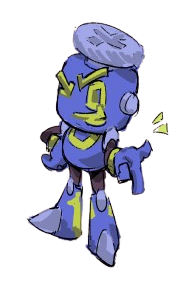

Desvende o Código do
Scrum com a BorB
Bem-vindo à BorB, nossa plataforma de ensino sobre a
metodologia Scrum!
Nosso objetivo é tornar o aprendizado sobre agilidade e gestão de projetos mais simples, dinâmico e acessível, combinando conteúdos didáticos com atividades interativas que ajudam você a aprender na prática.
Ao longo do curso, você dominará os fundamentos da Agilidade e o Manifesto Ágil, compreendendo os princípios que orientam o desenvolvimento de projetos modernos. Você aprenderá os conceitos essenciais do Scrum, seus papéis, eventos e artefatos — além de temas fundamentais como User Stories, Gestão do Product Backlog, Kanban, Planejamento, Métricas Ágeis e Qualidade.
Nossa proposta transforma conceitos teóricos em experiências envolventes para preparar você para situações reais de trabalho e para conquistar sua certificação.

SUA JORNADA COMEÇA AQUIPronto para aprender Scrum?
Iniciar estudosInicie agora sua jornada pelos 12 temas
da plataforma, e domine essa metodologia.
Aprenda com
BorB
O que você vai aprender:
Compreender a Agilidade: Dominar os valores e princípios do Manifesto Ágil aplicados a projetos modernos.
Domínio do Framework Scrum: Entender em detalhes os papéis (Product Owner, Scrum Master, Developers), eventos (Sprint Planning, Daily, Review, Retrospective) e artefatos.
Aplicação Prática: Saber criar e gerenciar User Stories, Product Backlog, quadros Kanban e aplicar métricas de acompanhamento.
Garantia de Qualidade e Entrega de Valor: Desenvolver habilidades para promover a colaboração em equipe, organização e entrega contínua de valor.
Nesta plataforma, você passará por 12 temas fundamentais com questões práticas e teóricas sobre a metodologia Scrum. O aprendizado ocorre em uma progressão totalmente interativa, permitindo que você acompanhe e gerencie seu progresso passo a passo, tanto ao longo de cada tema quanto na evolução geral do curso.
Prepare-se para testar seus conhecimentos e evoluir no próprio ritmo!
Criar minha conta